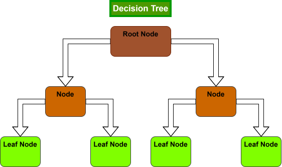
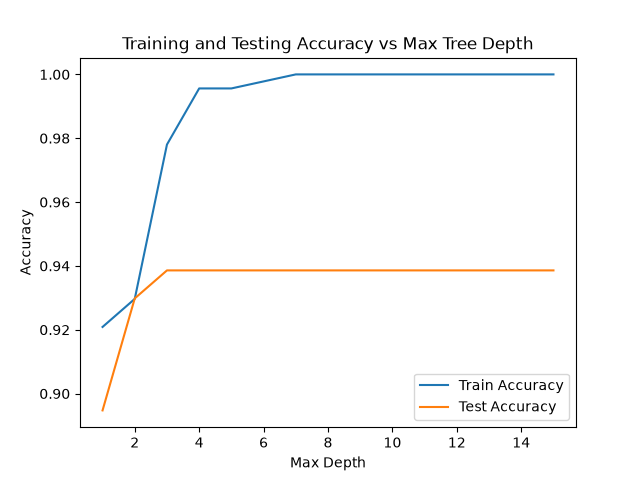

Decision Tree From Scratch
Summary
Language: Python
Core dependency: NumPy
Datasets: Toy data, Wisconsin breast cancer dataset
Repository: link
Decision Tree from scratch
Introduction
Decision trees are one of the simplest machine learning methods for regression and classification. In this project, we will be focused on classification, however, the extension to regression problems is natural. The idea is simple: continually ask the “strongest” questions possible in order to reasonably infer the class of a given data point. These are “yes” or “no” questions that allow us to (hopefully) place our classes into distinct categories that can generalize to unseen data.
The structure of a decision tree is composed of nodes, including one root node, intermediate nodes, and many leaf nodes. Each node refers to a single yes or no question that functions to partition our dataset (training) or deduce the class of a given data point (testing). If the question (condition) of a node is met, then we move down and left, otherwise we move down and to the right. Leaf nodes are responsibly for predicting the class. The majority class for the training data that ended up at a leaf node determine the prediction.
Not all questions are treated equally, but firstly, how do we come up with questions? In this code, we will implement the simplest method: construct possible threshold splits as the midpoint between each unique data point for each feature. The choice on whether or not to split the data based on this threshold is what we refer to as the yes or no question. For now we consider one popular criterion for whether or not a split is considered strong or not: Gini impurity. While these have nice information theoretic stories, the main idea is that we wish to make large splits that create disproportionality in the classes.
The first is called “Gini impurity”. This gives us a measure of how impure a single node is. It is
\[ \operatorname{Gini} = 1 - \sum_{i=1}^{C}p(i)^2 \]
where \(p(i)\) is the propertion of samples in class \(i\). Gini impurity is \(0\) if the node contains only one class. That would be considered pure. It is highest when the proportions for each class are \(\frac{1}{2}\). This makes sense since we wish for nodes to be able to identify samples with a given class, and in the end they will predict base on their majority class.
This implemnented in the code with a function that takes in a vector of targets:
def gini(y):
proportions = np.unique(y, return_counts=True)[1] / len(y)
return 1 - np.sum(proportions**2)To determine how strong a given split is, we take a weighted combination of Gini impurities for the left and right nodes:
\[ \operatorname{Gini}("split") = \frac{n_1}{n}\operatorname{Gini}("left") + \frac{n_2}{n}\operatorname{Gini}("right") \]
where \(n_1 + n_2 = n\).

Motivation
The motivation for this project is two-fold: to understand decision trees and the necessity of recursive logic, and practice performing basic statistical analysis, looking at things like:
- overfitting
- cross-validation
- bootstrapping
- confusion matrices
- pruning
Implementation
The most important part of decision trees is deciding how to structure the classes. Initially, we may try to make a class for: tree, root node, intermediate nodes, leaf nodes. We will need the tree class to handle the high level structure, but it turns output that we only need a single node class. The root node and intermediate nodes have the same functionality, and we will be able to condition appropriately on the node to decide whether it acts as a leaf node or not. Let’s check how the node class works.
class Node:
def __init__(self, feature = None, threshold = None, left_node = None, right_node = None, value = None):
self.feature = feature
self.threshold = threshold
self.left_node = left_node
self.right_node = right_node
self.value = value
returnWe see that the node does not contain any of the functionality, it simply holds pertinent information to guide movement down the tree.
- The first component is
feature, this refers to the feature from the data that we will condition on (or ask questions about). - The second component is
threshold, this decides what numeric value to split on for the decided feature. - The third and fourth class variables contain the child nodes. Each node, besides the leaf nodes, will contain two child nodes based on the above condition. Therefore, instances of leaf nodes will keep this variables as “None”.
- Lastly, we have
value. This is only for use by leaf nodes to decide which class to predict. Other nodes will keep this as “None”. This design choice allows use to easily identify between leaf nodes and other nodes.
There is also an important point on recursion to note here. The node instance will generally contain other node instances. This will allow the root node to contain the entire tree. The last part of the code is the tree class. Let’s go through each of the functional components.
class DecisionTree:
def __init__(self, impurity="gini", max_depth=None, min_split = 2):
self.max_depth = max_depth
self.min_split = min_split
self.impurity = impurity
returnWe initialize by choosing the impurity (“entropy” is another criterion choice in the code), the maximum depth of the tree, and the minimum number of data points we need to consider another split. The max depth is necessary since otherwise, we could just end up with one leaf per data point. This would lead to serious overfitting.
The most important part of the code is the function _best_split which determines the splitting thresholds with lowest Gini impurity:
def _best_split(self, x, y):
best_feature = None
best_threshold = None
best_impurity = np.inf
# check each partition class proportions and loss
for j in range(x.shape[1]):
# construct unique thresholds for column j
vals = np.unique(x[:,j])
thresholds = (vals[:-1] + vals[1:]) / 2
for threshold in thresholds:
left_ind = x[:,j] <= threshold
right_ind = x[:,j] > threshold
y_left = y[left_ind]
y_right = y[right_ind]
n_left = len(y_left)
n_right = len(y_right)
n = n_left + n_right
# ignore invalid splits
if len(y_left) == 0 or len(y_right) == 0:
continue
left_impurity = gini(y_left)
right_impurity = gini(y_right)
gini_imp = (n_left / n) * left_impurity + (n_right / n) * right_impurity
if gini_imp < best_impurity:
best_impurity = gini_imp
best_feature = j
best_threshold = threshold
return best_feature, best_threshold, best_impurityFirst consider
for j in range(x.shape[1]):
vals = np.unique(x[:,j])
thresholds = (vals[:-1] + vals[1:]) / 2This goes through the columns of a dataset and returns the midpoints for each unique value in column \(j\). This defines the values we check for splitting on each feature.
Next, we consider each threshold and split the dataset accordingly:
for threshold in thresholds:
left_ind = x[:,j] <= threshold
right_ind = x[:,j] > threshold
y_left = y[left_ind]
y_right = y[right_ind]
n_left = len(y_left)
n_right = len(y_right)
n = n_left + n_rightNote that we only need the labels for each split to calculate impurity and thus we only save the necessary indices.
To complete the iterations, we save the information corresponding to the best splits:
left_impurity = gini(y_left)
right_impurity = gini(y_right)
gini_imp = (n_left / n) * left_impurity + (n_right / n) * right_impurity
if gini_imp < best_impurity:
best_impurity = gini_imp
best_feature = j
best_threshold = thresholdWe compute the weighted impurity of nodes as we discussed in the introduction and save the feature and threshold value that were used. We also save the impurity value here, although it is not necessary for making the tree.
With the node class, and ability to find the best split, we conclude with construction of the tree:
def _build_tree(self, x, y, depth):
# check if node is pure
if len(np.unique(y)) == 1:
return Node(value = y[0])
# check if max depth reached or node has fewer than minimum data requirement
if depth == self.max_depth or x.shape[0] < self.min_split:
classes, counts = np.unique(y, return_counts=True)
return Node(value = classes[np.argmax(counts)])
best_feature, best_threshold, best_impurity = self._best_split(x, y)
# check if no valid threshold (all features are the same)
if best_feature is None:
classes, counts = np.unique(y, return_counts=True)
return Node(value = classes[np.argmax(counts)])
left_indices = x[:, best_feature] <= best_threshold
right_indices = x[:, best_feature] > best_threshold
return Node(feature=best_feature, threshold = best_threshold,
left_node = self._build_tree(x[left_indices,:],
y[left_indices],
depth + 1),
right_node = self._build_tree(x[right_indices,:],
y[right_indices],
depth + 1))The first three conditional statements are when we may want to stop. Namely, the third one says stop if we cannot even find a best split (rows are the same). The first says: If the node is pure (contains only one class) then return the class it contains as the prediction. The second two are for when we meet the stopping criteria (discussed above).
The main implementation is this last return block. This shows how the tree is built recursively, _build_tree returns the nodes once we need to stop, and we call this function within the Node initialization.
The final function to train the tree is fit:
def fit(self, x, y):
self.root = self._build_tree(x, y, 0)
return self.rootWe start with the root (depth \(0\)) and a dataset of our choice, and the recursive code handles the rest.
Experiments
For now, we only include a small toy example to show that this works. Let
x = np.array([[1.0, 2.0],[2.0,1.0],[3.0,3.0],[6.0,2.0],[7.0,1.0],[8.0,3.0]])
y = np.array([0,0,0,1,1,1])so that we have \(6\) data points and two classes. In order to evaluate the tree we construct, we will use the two functions in the tree class:
def _predict_row(self, x, node):
# only leaf nodes have a value != None
if node.value is not None:
return node.value
if x[node.feature] <= node.threshold:
return self._predict_row(x, node.left_node)
else:
return self._predict_row(x, node.right_node)
# returns leaf prediction
def predict(self, x):
# go sample by sample
predictions = []
for i in range(x.shape[0]):
predictions.append(self._predict_row(x[i,:], self.root))
return np.array(predictions)This initially takes in a data point and root node and continually progresses down the tree by checking node.value which is only “not None” for leaf nodes to return the majority class.
For the toy example, the full training is just these few lines:
tree = DecisionTree(impurity = "gini", max_depth=3, min_split=2)
tree.fit(x,y)
predictions = tree.predict(x)
print("Training Accuracy:", np.mean(predictions == y))And for predicting on some test data:
x_new = np.array([
[1.5, 2.5],
[7.5, 2.5],
[4.0, 1.0]
])
new_predictions = tree.predict(x_new)
print("\nNew predictions:")
print(new_predictions)If done correctly, training and testing accuracy on this toy data should be perfect.
Analysis
One of the most important questions in machine learning is “How do we know if we trained a good model”? While we briefly mentioned test accuracy, we can go a bit further while analysing our tree’s performance on a more complicated classification dataset.
Below we will experiment on the Wisconsin breast cancer dataset and discuss the following concepts:
- Confusion matrix
- Precision, recall, and F1
- Overfitting
- Cross-validation
- Bootstrapping
- Pruning
Now let’s consider the code in the breastcancer.py experiment. This will look similar to the toy example except we load this dataste from sci-kit learn:
data = load_breast_cancer()
x = data.data
y = data.target
# change 1 to be malignant tumors and 0 to be benign tumors
y = np.array([int(not bool(x)) for x in y])
#print(x.shape, y.shape)
X_train, X_test, y_train, y_test = train_test_split(x, y, test_size=0.2, random_state=42)
tree = DecisionTree(impurity="gini", max_depth=5, min_split = 2)
tree.fit(X_train, y_train)
training_predictions = tree.predict(X_train)
test_predictions = tree.predict(X_test)
print("Training Accuracy:", np.mean(training_predictions == y_train))
print("\nTesting Accuracy:", np.mean(test_predictions == y_test))which gives the following results:
Training Accuracy: 0.9956043956043956
Testing Accuracy: 0.9385964912280702The results seem good, but accuracy alone does not tell us the full picture. For example, is the dataset heavily imbalanced and we are just predicting a single class? Are we predicting malignant tumors to be benign more than vice versa? Since our training accuracy is much higher, are we overfitting to the data?
Let’s try to answer these questions by looking a bit deeper.
Confusion matrix: Precision, Recall, and F1
The confusion matrix for our model is defined by the following counts:
- True Positive: model predicts positive, and the sample is positive
- True Negative: model predicts negative, and the sample is negative
- False Positive: model predicts positive, and the sample is negative
- False Negative: model predicts negative, and the sample is positive
We compute these in the code by finding the samples corresponding to each category, and then summing them up:
TP = (y_test == 1) & (test_predictions == 1)
TN = (y_test == 0) & (test_predictions == 0)
FP = (y_test == 0) & (test_predictions == 1)
FN = (y_test == 1) & (test_predictions == 0)
TP: 40
TN: 67
FP: 4
FN: 3For breast cancer prediction, we may be more worried about false negatives than false positives, since a false negative means we predict no malignancy but the tumor was actually malignant. Different machine learning algorithms may require different approaches to emphasize making fewer of these mistakes. Based on the confusion matrix, we consider three metrics with different interpretations:
- Precision = TP / (TP + FP)
- Recall = TP / (TP + FN)
- F1 = 2 * (Precision * Recall) / (Precision + Recall)
Precision tells us the fraction of tumors that were malignant our of all the observations our model predicted were malignant.
Recall tells us the fraction of malignant tumors that our identified, out of all observations that were actually malignant. This is of particular importance for this problem.
F1 balances the precision and recall, if either one is low, the F1 score will be brought down substantially.
Since we have the precision matrix, we can easily compute these metrics from the code:
precision = np.sum(TP) / (np.sum(TP) + np.sum(FP))
recall = np.sum(TP) / (np.sum(TP) + np.sum(FN))
F1 = (2 * precision * recall) / (precision + recall)
Precision: 0.9090909090909091
Recall: 0.9302325581395349
F1: 0.9195402298850575Model Complexity: Underfitting vs Overfitting
A choice we have to make with each decision tree is the depth. We saw how this was done above by choosing the max_depth and min_samples in the code, where the maximum depth is the primary variable determining tree complexity.
When the tree is too simply, we risk underfitting the data, and when the tree is too complex, we risk overfitting. To see this, let’s see the training and testing accuracy for our tree at increasingly larger depths.
| Max Depth | Train Accuracy | Test Accuracy |
|---|---|---|
| 1 | 0.921 | 0.895 |
| 2 | 0.930 | 0.930 |
| 3 | 0.978 | 0.939 |
| 4 | 0.996 | 0.939 |
| 5 | 0.996 | 0.939 |
| 6 | 0.998 | 0.939 |
| 7+ | 1.000 | 0.939 |

At depth \(1\), we see we have a very simply tree that fails to attain the required complexity to accurately predict on unseen data. Beginning with a maximum depth of \(2\), we see that the training accuracy is \(93\%\) with test accuracy of \(93\%\). From here, the training accuracy increases up to \(100\%\) while the test accuracy mostly stays the same. This may indicate that we are training an overly complex model, which understands the training data very well but can’t extrapolate any better on the test data.
Unfortunately, we cannot make any concrete conclusions based on these results. Generally, choosing the depth which achieves highest test accuracy would be using the test data to train our model. Let’s move on to the next section to see a better way to handle this issue.
Cross-validation
The idea with cross-validation is to use ideas from the previous sections, but actually leave the test set alone. This helps us choose a model with genuine generalizability. Cross-validation works by splitting the training dataset into \(K\) pieces (K-fold cross-validation) and then repeatedly train on \(K-1\) pieces while using the last as the “validation” set. The cross-validation performance is then the average of these validation accuracies. This gives us a more reasonable way to determine the proper tree depth.
In the code, we can run cross-validation for each of the max depth choices. We start by shuffling indices and using NumPy’s array_split function to make the folds. Then for each fixed depth, we run through all folds and produce a validation accuracy for each, averaging them at the end to return a single validation accuracy for the depth.
rng = np.random.default_rng(42)
indices = np.arange(len(y_train))
rng.shuffle(indices)
X_train_cv = X_train[indices]
y_train_cv = y_train[indices]
num_folds = 5
fold_indices = np.array_split(np.arange(len(y_train_cv)), num_folds)
depth_cv_accuracies = []
for depth in range(1,16):
validation_accuracies = []
for k in range(num_folds):
training_indices = np.concatenate([fold_indices[j] for j in range(num_folds)
if j != k])
X_train_fold = X_train_cv[training_indices, :]
X_val_fold = X_train_cv[fold_indices[k], :]
y_train_fold = y_train_cv[training_indices]
y_val_fold = y_train_cv[fold_indices[k]]
tree = DecisionTree(impurity="gini", max_depth=depth, min_split=2)
tree.fit(X_train_fold, y_train_fold)
val_predictions = tree.predict(X_val_fold)
val_acc = np.mean(val_predictions == y_val_fold)
validation_accuracies.append(val_acc)
mean_val_acc = np.mean(validation_accuracies)
print("\nValidation Accuracy:", mean_val_acc)
depth_cv_accuracies.append(mean_val_acc)Running the code will find two categories of depth with the highest validation accuracy: max depth \(3\) and max depth \(9+\), each returning Validation Accuracy: 0.9274725274725275. Often it is best to choose the simplest model when performance is equivalent, so we would believe a maximum depth of \(3\) is the best choice for this analysis.
In future projects, we will discuss improvements over this basic cross-validation by considering two questions:
- What is the variance of my validation accuracies?
- What if the cross-validation folds contain different class proportions than my original data?
For now, we will move on to the last topic in the decision trees project which is pruning.
Pruning
Previously, we focused on the parameter max_depth for our tree and used cross-validation to inform our choice. This is a useful strategy to proactively avoid overfitting by deciding the best parameter value. Pruning is a technique (not unique to decision trees) which retroactively handles overfitting.
The idea is this: grow a relatively large decision tree and remove the branches that don’t offer enough improvement for the added complexity.
While regularization methods exist to penalize complexity (“CART weakest link” pruning), we will do something relatively simple. Let’s check each subtree and ask the question: “What if I replace this subtree with a single leaf?”. This replaces further splitting with a leaf that predicts the majority class.
The goal is to sacrifice some training accuracy for improved validation accuracy (yes, we can use this AND cross-validation!).
(Stay tuned for a code update to perform pruning).
Conclusion
In this project, we saw how to utilize recursive coding to implement decision trees on a real dataset. We then considered some standard statistical techniques for analyzing the performance of our trees.
In a future project, we will discuss the high variance of decision trees, leading us to explore ideas such at bootstrapping and bagging, and eventually discover random forests.